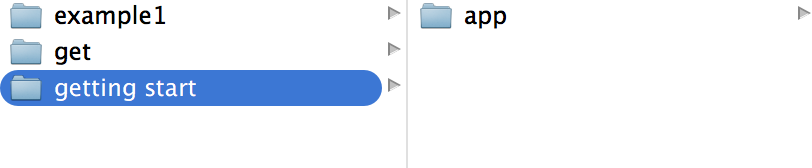
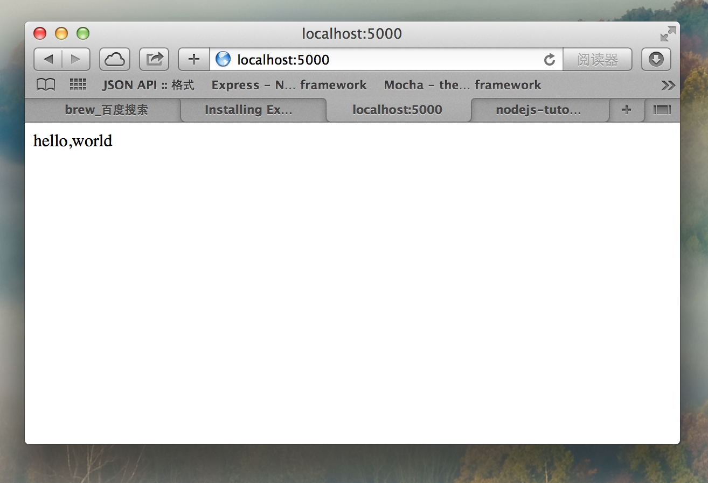
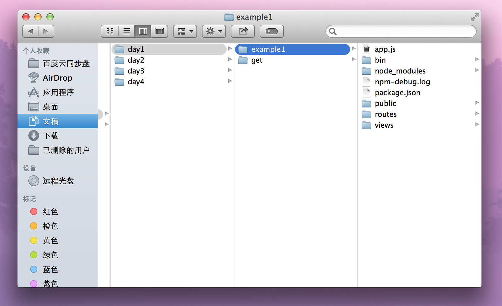
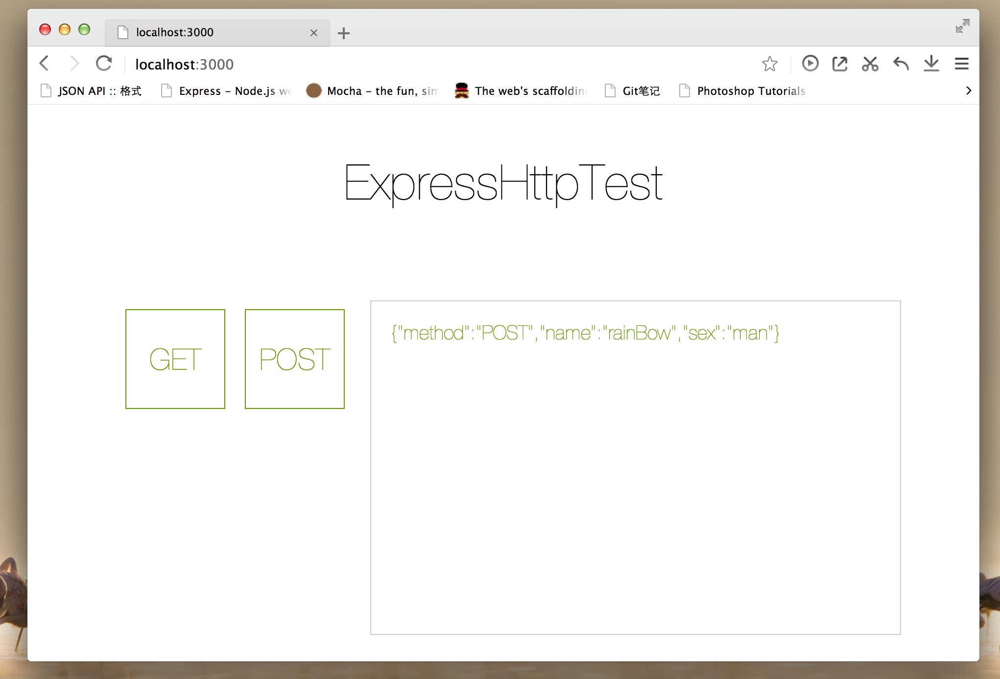
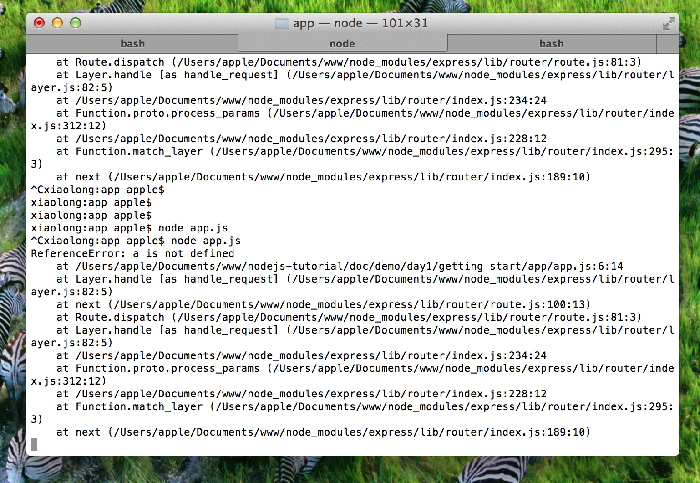
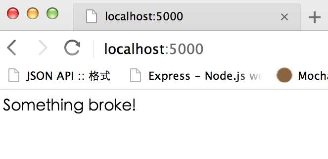
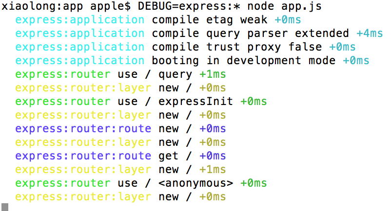

Express
http://expressjs.com/
Express是一个简洁、灵活的基于nodejs的web应用开发框架，它是基于connect中间件的。
它提供一系列强大的特性，勇于创建各种Web和移动设备应用。
为什么使用Express
- 基于node的异步，性能比较好
- Express本身比较成熟，目前已经是v4了
- 有很多大规模应用实例，集群等都非常容易
无状态的http协议
HTTP协议（HyperText Transfer Protocol，超文本传输协议）是用于从WWW服务器传输超文本到本地浏览器的传送协议。它可以使浏览器更加高效，使网络传输减少。它不仅保证计算机正确快速地传输超文本文档，还确定传输文档中的哪一部分，以及哪部分内容首先显示(如文本先于图形)等。 HTTP是一个应用层协议，由请求和响应构成，是一个标准的客户端服务器模型。HTTP是一个无状态的协议。
大家都明白，Web应用抽象起来就是客户端发出请求，请求到达服务器后，服务器经过一番捣鼓，给客户端发回一个应答。“请求”我们一般抽象成 request，“应答”是 response。服务器和客户端（一般也就是浏览器啦，但是绝不局限于浏览器哦。）之间交流的语言就是 HTTP 协议了。至于服务器怎么折腾出一个应答来的，就八仙过海，各显神通了。
总之，Web 应用中两个重量级的东东就是： Request ， Response 。
前面我们说到，每次有访问进来，我们的代码都会跑一遍。现在的问题是，在我们的代码里，怎么抓到客户端发来的 request , 然后，到哪里去找这个 response ，好把我们捣鼓出来的东西放进去，发给客户端呢？答案是，只要我们把他们作为参数交给 tellme 函数(你可以给这个函数取任何名字甚至不给他名字)，然后，当请求到达时，node.js 就会把客户的请求封装成 request ，预备发给客户的应答封装成 response 。我们拿到 request ，看看他请求些什么，再折腾些东西（读出个文件也好，去查数据库也好，随便你了。）丢进 response ，发给客户端。
TODO: 此处该补出一张express在node中得位置图片
Node 基础
see node 基础
Node 版本的http server
var http = require('http');
http.createServer(function(request,response){
console.log(request);
response.end('Hello world!');
}).listen(8888);
这就是最简单的实现
Node connect 版本的http server
Connect is an extensible HTTP server framework for node using "plugins" known as middleware.
var connect = require('connect')
var http = require('http')
var app = connect()
// gzip/deflate outgoing responses
var compression = require('compression')
app.use(compression())
// store session state in browser cookie
var cookieSession = require('cookie-session')
app.use(cookieSession({
keys: ['secret1', 'secret2']
}))
// parse urlencoded request bodies into req.body
var bodyParser = require('body-parser')
app.use(bodyParser.urlencoded())
// respond to all requests
app.use(function(req, res){
res.end('Hello from Connect!\n');
})
//create node.js http server and listen on port
http.createServer(app).listen(3000)
这是官方给出的例子
安装Express
- 如何手动安装
- 如何使用generator
如何手动安装
新建文件夹:
$ mkdir /getting start/app
$ npm init

cd到app下,运行:
$sudo npm install --save express
将express安装在此目录下,新建app.js文件:
var express = require('express');
var app = express();
app.get('/',function(req,res){
res.send('hello,world');
});
app.listen(5000);
终端运行:
$node app.js
开启端口，浏览器访问localhost:5000，输出:

如何使用generator
安装
generator是express命令工具集，首先确保已经安装node和npm,先在全局安装这个工具集:
$npm install -g express-generator
如果安装失败，尝试加sudo权限:
$sudo npm install -g express-generator
现在新建一个我们的express应用,执行:
$express expressApp
项目创建完毕，文件结构如下:

express命令以及参数说明
TODO:by kezhi
安装依赖
打开package.json，可以看到依赖的模块，执行命令来下载依赖的模块:
$npm install
如果下载依赖失败，尝试加sudo权限:
$sudo npm install
下载依赖模块成功后，可以看到在node_modules文件夹下多出了这些模块:

启动服务器
回到app.js层级，执行:
$npm start
开始运行express打开端口，用浏览器打开http://localhost:3000/，在此估计会出现缺少模块的情况，如果有模块缺少，cd到node_modules文件夹下去安装缺失的模块:
$sudo npm install xxx(模块名称)
大概会缺失5个模块左右，模块全部安装完成，浏览器则会输出:

完毕,说明express安装成功.
核心概念
请求request
Request对象是有关于客户端所发出的请求的对象，只要是有关于客户端请求的信息，都可以藉由它来取得，例如请求标头、请求方法、请求参数、客户端IP，客户端浏览器等等信息。
客户端发来的请求，node.js 帮我们封装成 request 对象
在request里面我们可以获得
- body
- header
- params
- query
- ....
响应response
Response对象是有关于对客户端请求之响应，可以利用它来设定一些要响应的讯息，例如标题信息、响应状态码等.
我们利用response,向客户端发送回答，说白了是向浏览器写内容。
理解路由
所谓路由就是定义
- 地址1：谁来处理,以什么方式处理
- 地址2：谁来处理,以什么方式处理
var express = require('express');
var app = express();
app.get('/',function(req,res){
res.send('hello,world');
});
app.post('/someur',function(req,res){
res.send('hello,world');
});
app.listen(5000);
说明一下
session
一个session就是一系列某用户和服务器间的通讯。服务器有能力分辨出不同的用户。
一个session的建立是从一个用户向服务器发第一个请求开始，而以用户显式结束或session超时为结束。 其工作原理是这样的：
- 当一个用户向服务器发送第一个请求时，服务器为其建立一个session，并为此session创建一个标识号
- 这个用户随后的所有请求都应包括这个标识号。服务器会校对这个标识号以判断请求属于哪个session
- 当用户在一段时间没有任何操作，session就会自动超时
这种机制不使用IP作为标识，是因为很多机器是通过代理服务器方式上网，没法区分每一台机器。
对于session标识号（sessionID），有两种方式实现：cookies和URL重写，此处不详细讲解。
express的session
nodejs本身不管session，因为用了express框架，express基于connect，connect中有session管理的能力。connect是插件式架构，它的插件称之为“中间件”，其中有个中间件就是叫作session。
到了4.xx版本之后，session管理和cookies等许多模块都不再直接包含在express中，而是需要单独下载添加。
https://github.com/expressjs/session
应用场景: 登陆
- 在登陆页面完成用户鉴权，鉴权成功后，在session里存储用户信息
- 一段时间没有任何操作，session就会自动超时，此时用户点击页面的时候，后台会判断是否存在当前用户的session
- 一半超时会重定向到登陆界面，提示此操作需要用户登陆
应用场景: 购物车
- 保证当前session里有用户信息，用户是登陆状态的
- 用户在购物页面操作，点击加入购物车，此时在session里增加一条信息，存储当前物品信息
- 用户结算的时候，从session获取物品价格和数量，计算出总价，订单完成后，清理session
理解模板jade
- http://jade-lang.com/
还有handlebars
以及如何用生成器指定模板
理解public目录
- 常规做法
app.js里
app.use(express.static(path.join(__dirname, 'public')));
它就是用来托管public中得所有文件。可以以http方式访问
说明
####如果public/index.html不存在
此时如何使用其他页面做为入口，需要再/路由定义处，redirect到对应页面(by kezhi)。
如何在静态页面处理请求参数
在静态页面处理请求参数，是通过连接地址把参数传递过去，通过前端jacascript取出做处理(by kezhi)。
理解express.static
说明http-server用法
区分express.static和http-server的差别：功能一样，用法上有差异
http-server只做静态托管文件，输出请求文件，无法拦截到请求参数; express.static不仅可以托管静态文件，并且提供接口可以拦截到前端页面的请求参数，并且可以控制返回数据;（这句是错的）
路由冲突
当public/index.html和路由的/冲突
此时按照public/index.html走
任务
此处开始是大家每个人都必须亲手做的练习
- 路由定制方式
- 如何处理get请求
- 如何处理post请求
- 如何实现文件上传
- request里如何取值
- response返回
- 完成api返回
- 完成登陆
- 完成购物车
路由定制方式
路由定制方式有2种
- 常规做法
- 使用路由重定向
常规定义路由
var express = require('express');
var app = express();
app.get('/',function(req,res){
res.send('hello,world');
});
app.post('/someur',function(req,res){
res.send('hello,world');
});
app.listen(5000);
定义了2个请求
- /
- /someurl
使用路由重定向
in app.js
var routes = require('./routes/index');
var users = require('./routes/users');
app.use('/', routes);
app.use('/users', users);
然后in /routes/index.js里
var express = require('express');
var router = express.Router();
router.get('/get', function(req, res) {
res.render('index', { title: 'Express' });
});
router.post('/posttapi', function(req, res) {
res.render('index', { title: 'Express' });
});
module.exports = router;
此时的router里可以增加各种请求的方法。
这种写法是模块化写法，可以按照业务或者其他分类组织代码，使代码具有更高的可读性。
如何处理get请求
我们可以在一个html文件里向端口发送get请求，首先要在访问http://localhost:3000下，端口能向浏览器输出此html，默认情况下，express是会输出pubblic文件夹下的index.html文件，在没有特别指明的情况下，所以注释掉:
//app.use('/', routes);
这样在get请求的url为'/'时，express会找到pubblic文件夹;我们可以自定义路由:
//自定义路由
var myHttpGet = require('./routes/getserver');
app.use('/getserver', myHttpGet);
当get请求的url为/getserver时，express会执行myHttpGet模块，在routes文件夹下实现myHttpGet模块:
var express = require('express');
var router = express.Router();
/* GET http.*/
router.get('/', function(req, res) {
var sUrl = req.url;
var arr = sUrl.split('?');
var arrReq = arr[1].split('&');
var resJson = {};
for(var i=0; i<arrReq.length; i++){
//['xx=xx','xx=xx']
var newarr = arrReq[i].split('=');
var attr = newarr[0];
var value = newarr[1];
resJson[attr] = value;
};
res.send(resJson);
});
module.exports = router;
当我们在html里用ajax向此路由发送get请求时，我们可以取到参数，做一些处理后，用:
res.send(resJson);
返回给ajax对象:
oGetBtn.onclick = function(){
$.ajax({
type: "GET",
url: "http://localhost:3000/getserver",
data: {
'method':'GET',
'name':'rainBow',
'sex':'man'
},
dataType: "json",
success: function(data){
var str = JSON.stringify(data);
oResBox.innerHTML = str;
}
});
};
点击GET按钮发送GET请求，并把发出去的参数整理成json格式并返回:

如何处理post请求
在myHttpGet模块里添加接收此路由下得post请求代码,对于post请求，用req.body接收post参数:
/* POST http.*/
router.post('/', function(req, res) {
res.send(req.body);
});
点击按钮post发送post请求:
$.ajax({
type: "POST",
url: "http://localhost:3000/getserver",
data: {
'method':'POST',
'name':'rainBow',
'sex':'man'
},
dataType: "json",
success: function(data){
var str = JSON.stringify(data);
oResBox.innerHTML = str;
}
});

更多，带有参数的post请求
router.post('/post/:id', function(req, res) {
res.status(200).json({
data:{
id:req.param('id'),
name:'sss',
kkk:req.body.kkk
}
})
});
如何实现文件上传
request里如何取值
- body
- params
- query
各自举例
body处理post请求参数，把参数整理成json各式:
router.post('/', function(req, res) {
res.send(req.body);
});
query处理get请求参数，整理成json各式:
router.get('/www:soso', function(req, res) {
res.send(req.query);
});
response返回
- text
- xml
- json
完成api返回
完成登陆
完成购物车
实践积累
试着说明package.json的众多方面
npm install --savevsnpm install --save-devnpm startvsnpm test(scripts自定义)- 如何写一个npm，以及发布
阅读文档
getting start
入门文档，如果你看完了上面的内容，就可以不要看了
guide
此处是开发指南，建议完全看一遍
Error handling
监听server服务错误，如get请求的时候输出一个没定义的变量a，这时express捕捉到错误，并返回'Something broke!':
app.get('/',function(req,res){
res.send(a);
});
app.use(function(err, req, res, next){
console.error(err.stack);
res.status(500).send('Something broke!');
});
终端输出:

浏览器返回:

Debugging Express
Expressy已经内置了debug模块，如果要用debug运行app.js:
$DEBUG=express:* node app.js

知道如何查api文档
中文文档地址
http://www.expressjs.com.cn
如何在mac下面使用Dash查看离线文档
更多
- connect
- express框架源码
- 反向代理（proxy，比如haproxy，nginx）
- 集群部署
可以把session存储到redis等缓存中
// 设置 Session app.use(session({ store: new RedisStore({ host: "127.0.0.1", port: 6379, db: "test_session" }), resave:false, saveUninitialized:false, secret: 'keyboard cat' }))
dsdsds
总结